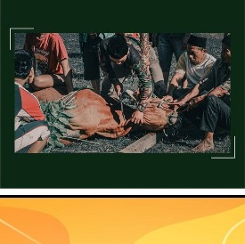

Merupakan salah satu sekolah menengah yang berada di Probolinggo, provinsi Jawa Timur. Adapun Nomor pokok sekolah nasional (NPSN) untuk SMAN 4 ini adalah 20536295. Sekolah ini menyediakan berbagai fasilitas penunjang pendidikan bagi anak didiknya. Terdapat guru-guru dengan kualitas terbaik yang kompeten dibidangnya, kegiatan penunjang pembelajaran seperti ekstrakurikuler (ekskul), organisasi siswa, komunitas belajar, tim olahraga, dan perpustakaan sehingga siswa dapat belajar secara maksimal. Proses belajar dibuat senyaman mungkin bagi murid dan siswa. Kunjungi sekolah terdekat ini pada jam kerja untuk mendapatkan informasi lain seperti cek lapor anak, pengumuman hari libur atau jadwal pelajaran, list mata pelajaran sekolah, informasi ujian, pendaftaran siswa baru, hingga syarat pendaftaran siswa baru. Anda juga dapat menghubungi kontak telepon sekolah untuk mendapat respon cepat, atau mengakses website sekolah ini secara online untuk mendapatkan informasi seperti profil sekolah dan berita terkait lainnya.
PARESIPA
Perkumpulan Arek OSIS dan MPK SMA Negeri 4 Probolinggo
klik disini untuk mengetahui info dari instagram
klik disini untuk mengetahui info dari facebook
klik disini untuk mengetahui info dari twitter
EXTRA KULIKULER
Berikut extrakurikuler yang ada di SMA 4 Negeri Probolinggo
- Pramuka
- Voli
- Basket
- Silat
- Paduan Suara
- Sepak Bola
- Futsal
- dll
Disetiap tahun diadakan berbagai macam kegiatan atau disebut acara tahunan, diantara lain adalah :
- GENI ( Gebyar Seni )
- Hari Raya Qurban
- Pemilihan Kangyuk dan Mbakyuk
- Prisma
- 17 Agustus 